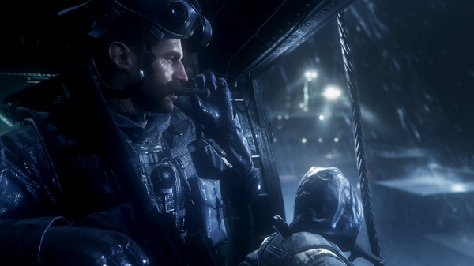
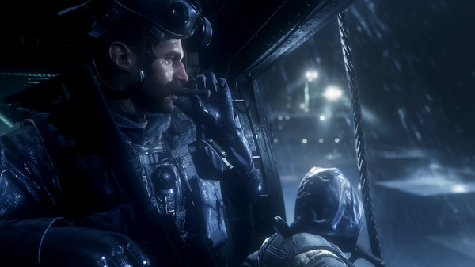

Rating: 6,7
Multiplayer player
Single Player
Online
Genre: Sport
Ontwikkelaar: EA
PEGI 18
Call Of Duty
Call of Duty (CoD) is een serie van computerspellen ontwikkeld door Infinity Ward, Treyarch en Sledgehammer Games. Na het succes van het eerste spel, volgden er nog meerdere spellen. Qua gameplay lijkt de Call of Duty-serie op de Medal of Honor-serie, maar in tegenstelling tot Medal of Honor speelt de speler als soldaat van verschillende landen, zoals de Verenigde Staten, het Verenigd Koninkrijk en de Sovjet-Unie.
Call of Duty Modern Warfare II biedt een singleplayer-campagne die audiovisueel een flinke stap vooruit zet ten opzichte van vorige games in de serie. De gameplay biedt veel variatie, met daarbij ook een aantal leuke 'throwbacks' naar missies uit de oude Modern Warfare-games. De multiplayer heeft vooral veel spelmodi die je al kent, maar dat is zeker geen minpunt; veel fans zouden bijvoorbeeld Headquarters of Search and Destroy niet willen missen. Daarbij komt dat er met Invasion en Prisoner Rescue twee leuke spelmodi zijn toegevoegd, waarbij de ene meer geschikt is voor casual spelers en de andere competitieve spelers zal aanspreken. Het is wel jammer dat er in en rond die multiplayer dingen misgaan of ontbreken. Ook wordt de Raid-modus later pas toegevoegd. Hij biedt in potentie interessantere gameplay dan de wat oppervlakkige co-op-modus die nu al in de game zit. Modern Warfare II is uiteraard ook de basis voor Warzone 2.0, maar die gratis te spelen afdeling van het spel verschijnt pas op 18 november.
 
